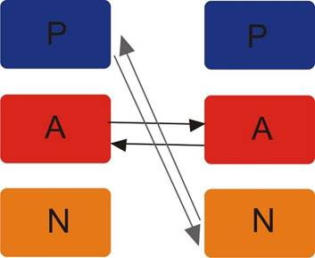

Las bases de datos transaccionales son almacenes de filas, lo que significa que los datos se almacenan en discos como filas, en vez de como columnas. Los almacenes de filas son la solución ideal para consultar toda la información de un cliente en la tabla de usuarios, ya que puedes buscar solo los datos que necesitas. Sin embargo, no son tan eficaces cuando intentas contar los clientes de un código postal concreto, ya que no solo tienes que cargar la columna ZIP, sino también las columnas name, address y user_id.
La principal ventaja de las bases de datos transaccionales es su flexibilidad. En ellas es posible modificar alguna información sin tener que manipular la información sensible o aislada ya que, tanto la interfaz, como las reglas para manipular la memoria de datos se pueden lograr sin cambiar la estructura general del sistema.
Además, las bases de datos transaccionales permiten a los usuarios tener una mejor capacidad para recuperar el historial de los datos almacenados y, gracias a su consistencia, existe un riesgo mínimo de pérdida de datos por causa de fallos en el sistema o en la alimentación.
Están diseñadas para satisfacer la necesidad de recolectar, enviar y recepción de datos en el menor tiempo posible. Rompe el sentido de la redundancia, así como de la duplicidad de datos o información y permite una relación entre las áreas de las empresas.